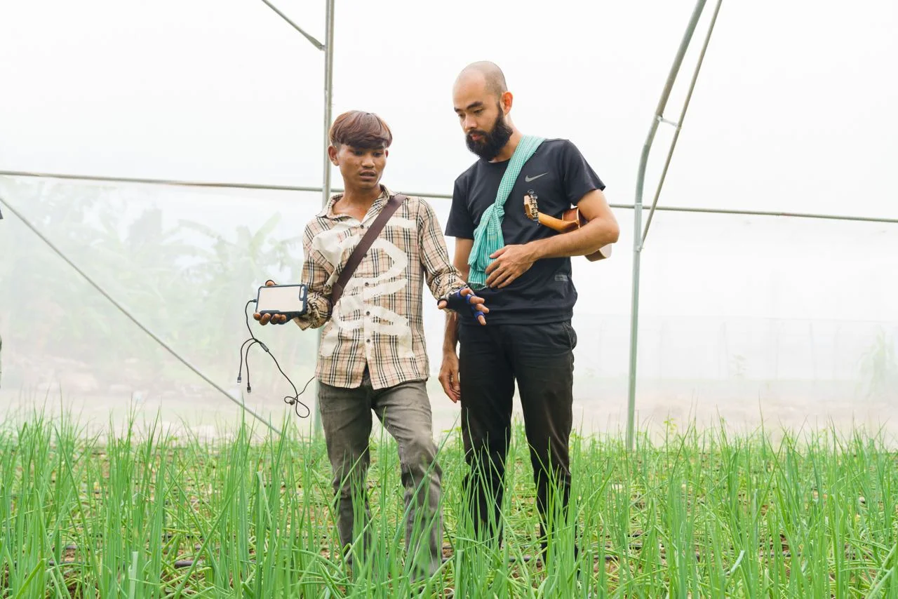

01 / Our approach
Agripreneurship & Social Business
Connect practical farming with the skills, confidence, and business models that support lasting livelihoods.
Our earlier youth programming brought personal development, agribusiness, and money management together. The longer-term vision includes support for farmers and cooperatives to develop viable farming businesses.
Explore Awakening Young Farmer